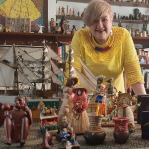

Diana Uribe
¿Quien es Diana Uribe?
Es una cronista, locutora, podcaster y difusora de historia colombiana que se ha especializado en los programas de divulgación histórica. Es conocida por sus programas radiales, podcasts, conferencias y sus audiolibros sobre historia universal.
Diana Uribe es una de las personas que más admiro por su dedicación, por hacer que mis domingos (y ahora culaquier dia de la semana gracias a sus podcast), pueda llenarlos de historias de muchos lugares del mundo. Es una mujer que me enseñó que la historia se escribe en "playback" y siempre vale la pena reconstruirla para reconocernos.
Más sobre Diana
Si quieres conocer más sobre esta gran historiadora te dejamos enlaces de interés:
- Libros
- Podcast
- Colaboraciones con la RTVC
- Familia
Biografía

Nació en Bogotá, Colombia. Es graduada en Filosofía y Letras de la Universidad de los Andes de Bogotá, y fue docente de historia retrospectiva de los pueblos en varias universidades de la capital. En sus clases se estudiaban temas como la Guerra del golfo Pérsico, la disolución de la Unión Soviética y la caída del apartheid, entre otros. Ha trabajado como analista internacional para la cadena Radionet y Caracol Televisión. Transmitió el análisis histórico de la invasión de Estados Unidos a Iraq presentado por Caracol TV en el año 2003. Ganadora del Premio Simón Bolívar de Periodismo por la mejor emisión cultural en la radio en 2002, y nominada al Premio CPB en Radio en 2003 y 2004.